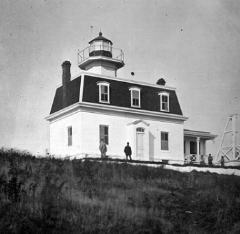

North Dumpling Island is a two-acre (8,100 m2) island in Fishers Island Sound of Long Island Sound, one mi (1.6 km) off the coast of Connecticut, south of Groton, within the territory of the town of Southold on Long Island in New York State. The island is about 0.3 nmi (560 m) north of South Dumpling Island, and is home to the North Dumpling Light, which dates from 1859. The island is privately owned by Dean Kamen, inventor of the Segway.
History

In 1639, John Winthrop, son of the governor of the Massachusetts Bay Colony, bought Fishers Island and the small islets around it, including those called "The Dumplings". Ownership of the islands, including North Dumpling, remained with the Winthrop family until 1847, when it was sold to the federal government for $600 ($19,620 in 2023) to be the site of a lighthouse.
The lighthouse and the keeper's dwelling were built and the light illuminated in 1859, and then rebuilt in 1871 with a taller tower. The lighthouse was deactivated in 1959, being replaced by an automated light on a skeleton tower, and the grounds and lighthouse were sold to a private party, George Washburn.
The island was purchased in 1977 by David Levitt, president of the Doughnut Corporation of America, who remodeled and expanded the house. Levitt convinced the Coast Guard to move the light back to the stone tower and to remove the skeleton tower. Levitt added sculptures to the island, including Temple of the Four Winds, the Moon Rock, and Meditation Rock. In 1986, Dean Kamen, inventor of the Segway and founder of FIRST, purchased the island for US$2,500,000 ($6.95 million in 2023).